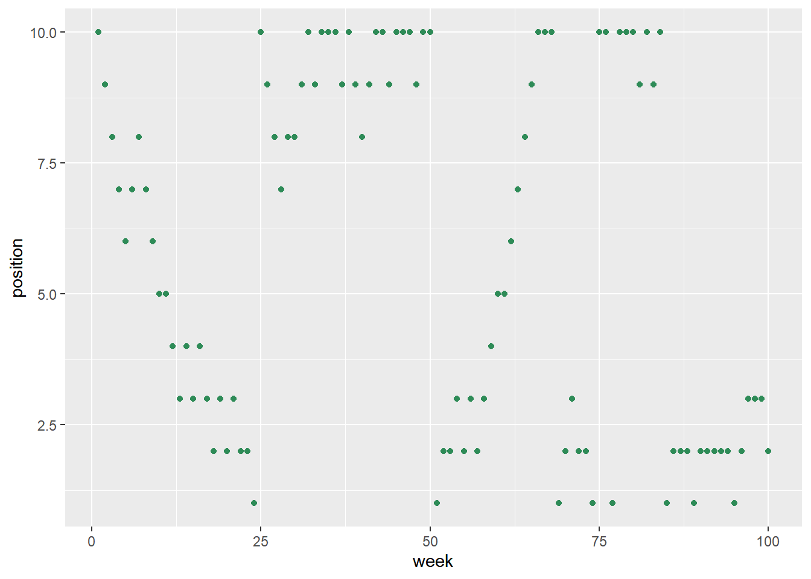
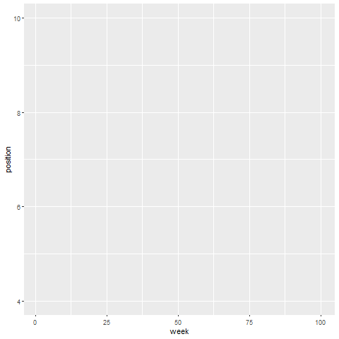
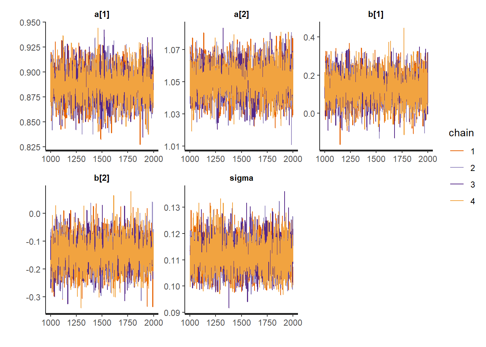
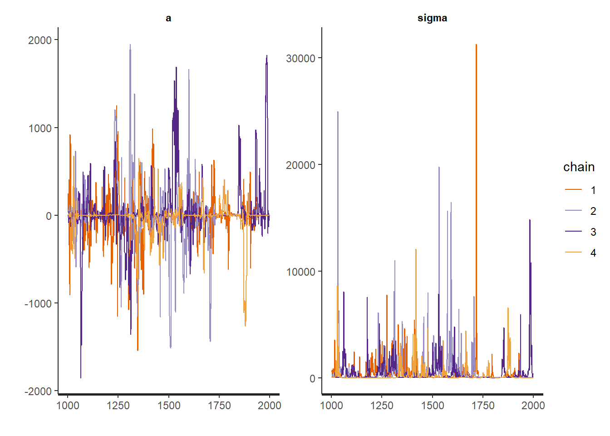

Chapter 9 Markov Chain Monte Carlo
# Colours by Paul Tol.
# Defined in R by Joachim Goedhart
# Source: doi 10.5281/zenodo.3381072
tol_light <- c('#BBCC33', '#AAAA00', '#77AADD', '#EE8866', '#EEDD88', '#FFAABB', '#99DDFF', '#44BB99', '#DDDDDD')9.1 Chapter Notes
A Metropolis Algorithm
The chapter opens with an implementation of the Metropolis algorithm, through a parable about the king of a ring of ten islands. Each week, the king decides whether to remain on his current island, or move to a neighbouring island. A proposal island is chosen by flipping a coin - either the next island clockwise or anti-clockwise from the current one. Whether the king moves to the proposal island or stays put depends on a random draw, with the probability weighted by the relative population of the island. In this example island 2 has twice as many people as island 1, island 3 has three times as many as island 1 etc.
Here’s the code from the book:
set.seed(71)
num_weeks <- 1e5 # 100,000 steps in the chain
positions <- rep(0,num_weeks) # empty position vector
current <- 10 # we start on island 10
for ( i in 1:num_weeks ) {
# record current position
positions[i] <- current
# flip coin to generate proposal
proposal <- current + sample( c(-1,1) , size=1 ) # propose either the +1 or -1 island
# now make sure he loops around the archipelago
if ( proposal < 1 ) proposal <- 10
if ( proposal > 10 ) proposal <- 1
# move?
prob_move <- proposal/current # ratio of population sizes
current <- ifelse( runif(1) < prob_move , proposal , current ) # automatically moves if population(propsal) > population(current)
}
position_data <- tibble(week = 1:100000, position = positions)The proportion of time the king spends on each island is in proportion to its population:
ggplot(position_data)+
geom_histogram(aes(x=position), bins=30)
The chapter also displays the first 100 weeks so you can see the path that the king takes. Here’s a little animation:
anim_metrop <- ggplot(position_data[1:100,])+
geom_line(aes(x=week, y=position),colour=tol_light[[4]],size=1)+
transition_reveal(week)
anim_metrop <- animate(anim_metrop,nframes=350,fps=20, end_pause = 50)
anim_metrop
# anim_save("animations\\09_anim_metrop.gif", animation = anim_metrop)
In the context of sampling from a target distribution, the islands are parameter values, and the populations of each island are the probabilities assigned to that parameter value. Each week is a sample.
Gibbs Sampling and Hamiltonian Monte Carlo
The chapter briefly touches on Gibbs sampling. The proposals in the algorithm above were decided by coin flip. But too many rejected proposals can make our algorithm computationally inefficient. Gibbs sampling is more thoughtful about its proposals and is more efficient as a result.
Gibbs sampling involves adaptive proposals that alters the distribution of proposed parameter values based on the current parameter values. It does this by solving for the posterior distribution of individual parameters using conjugate pairs - specific combinations of prior distributions and likelihoods. The chapter is pretty short on mathematical detail here since we’ll be very quickly moving towards using Hamiltonian Monte Carlo.
In high-dimensional problems that may well have high correlation between parameters (and therefore narrow ridges of high posterior probability), Gibbs sampling can become very inefficient. It may make too many proposals that are likely to be rejected.
Gibbs sampling will also run into the problem of concentration of measure. At high dimensions most of the probability mass is far from the mode of the distribution - the combination of parameter values that maximises posterior probability. We have a high-dimensional, reasonably narrow “shell” of high-probability. This is exactly the kind of space that Gibbs and Metropolis sampling approaches struggle with.
Hamiltonian Monte Carlo methods use local knowledge of the shape (i.e. gradient) of the posterior to make smart proposals. Imagine a skateboarder in a bowl. To get a sample from the distribution (bowl shape), the skateboarder kicks in a random direction with a random momentum. The rest of the work is done by gravity. After a bit of time the skateboard stops and records their position. This is a sample. We’ll collect more sample near the bottom of the bowl than near the top - this is the high-probability region. In order the skateboard to move according to the bowl-shape, it doesn’t need to know anything about the entire shape of the bowl, just the local gradient.
Each proposal should be accepted, but in practice checks are done to ensure conservation of e.g. the total energy in the system. If it has changed, something has gone wrong somewhere. HMC needs two settings:
- Number of leapfrog steps - each path between samples is broken up into a number of steps where the trajectory is (re-)calculated.
- Step size - these steps can be shorter or longer.
In Stan, there is a long warm-up phase which will decide these two parameters. Another thing Stan can do is notice when the path is turning around and arriving very close to the original point - this is called U-turning and it can make the sampling inefficient. Stan notices this happening and tunes the number of leapfrog steps to prevent it.
Revisit - there is a long code implementation of HMC in the chapter. Give it a try.
When working with Stan we’ll need to start doing two things:
- Pre-processing any variable transformations to save computation
- Removing columns from the data frame if they will not be included in the model.
The chapter introduces the ulam tool for fitting Hamiltonian Monte Carlo (HMC) models in Stan. However I’d like to try working in raw Stan. We load the ruggedness data from chapter 8 and fit the interaction model, this time using HMC instead of quadratic approximation.
## Loading data and processing
data(rugged)
data_rugged <- rugged %>%
mutate(log_gdp = log(rgdppc_2000))%>%
filter(!is.na(log_gdp)) %>%
mutate(log_gdp_std = log_gdp/ mean(log_gdp), # standardising
rugged_std = rugged/ max(rugged), # keeping zero ruggedness as a reference point
cid= if_else(cont_africa==1,1,2), # continent ID
cid = factor(cid))%>%
select(log_gdp_std, rugged_std, cid) # removing columns that won't be in the model The model in chapter 8, fit using quadratic approximation looks like this:
set.seed(100)
m8_3 <- quap( alist(
log_gdp_std ~ dnorm( mu , sigma ) ,
mu <- a[cid] + b[cid]*( rugged_std - 0.215 ) ,
a[cid] ~ dnorm( 1 , 0.1 ) ,
b[cid] ~ dnorm( 0 , 0.3 ) ,
sigma ~ dexp( 1 )
) , data=data_rugged ) Here is the code for the same model in Stan:
code_m9_1 <-
"data{
vector[170] log_gdp_std;
vector[170] rugged_std;
int cid[170];
}
parameters{
vector[2] a;
vector[2] b;
real<lower=0> sigma;
}
model{
vector[170] mu;
sigma ~ exponential( 1 );
b ~ normal( 0 , 0.3 );
a ~ normal( 1 , 0.1 );
for ( i in 1:170 ) {
mu[i] = a[cid[i]] + b[cid[i]] * (rugged_std[i] - 0.215);
}
log_gdp_std ~ normal( mu , sigma );
}"What is this code doing? We have three blocks: a data block, a parameters block, and a model block.
The Data Block
The observed variables are named, their data types are specified, and so are their sizes. The line “vector[170] log_gdp_std” means that we have a vector of real values with length 170, and we are naming it log_gdp_std. The line “int cid[170]” means we have an integer variable with length 170 named CID. Each line is ended by a semi-colon.
The Parameters Block
In our interaction model, we specified two intercepts and two slopes. That’s why we have “vector[2]” in this block for parameters \(a\) and \(b\). We have assigned an exponential prior to sigma, which has the support set of the positive real-numbers. The line “real<lower=0>” constrains sigma to be positive.
The Model Block
This block computes the log-probability of the data. It runs from top to bottom, first introducing \(\mu\). Each line with ~ in it add’s a term to the log-probability. Then it runs a loop to define our 170 \(\mu\)s. The final line for “log_gdp_std” is vectorised.
Here’s the code for compiling the model and sampling:
# stan_model compiles the model
# the data is not used and no samples are drawn
m9_1 <- stan_model(model_name = "m9_1",model_code=code_m9_1)%>% # compose_data is a tidybayes function
sampling(data = compose_data(data_rugged), chains=4, cores=detectCores())%>% # sampling draws samples from the posterior
recover_types() # tidybayes function useful when we have more complex indexing than this model
# The output is now a stanfit object that contains the draws from the posterior
# The function stan() does both the compiling and fitting but I'll keep them separate while I'm still new to Stan.
# saveRDS(m9_1,file="models\\m9_1.rds")We can use tidybayes to extract the draws in tidy format:
# Extracting Draws
m9_1 %>%
spread_draws(a[CID], b[CID], sigma)%>%
head(10)## Warning: `gather_()` was deprecated in tidyr 1.2.0.
## Please use `gather()` instead.
## This warning is displayed once every 8 hours.
## Call `lifecycle::last_lifecycle_warnings()` to see where this warning was generated.## # A tibble: 10 x 7
## # Groups: CID [1]
## CID a .chain .iteration .draw b sigma
## <int> <dbl> <int> <int> <int> <dbl> <dbl>
## 1 1 0.886 1 1 1 0.0773 0.113
## 2 1 0.870 1 2 2 0.214 0.110
## 3 1 0.893 1 3 3 0.0645 0.114
## 4 1 0.888 1 4 4 0.0449 0.107
## 5 1 0.867 1 5 5 -0.0146 0.114
## 6 1 0.920 1 6 6 0.193 0.105
## 7 1 0.851 1 7 7 0.0157 0.112
## 8 1 0.858 1 8 8 -0.0334 0.109
## 9 1 0.885 1 9 9 0.300 0.115
## 10 1 0.887 1 10 10 0.266 0.123The summarise_draws() function can be used to quickly get convergence diagnostics like rhat, ess_bulk and ess_tails see here for details on these diagnostics.
m9_1 %>%
spread_draws(a[CID], b[CID], sigma)%>%
summarise_draws()%>%
print(digits = 3)## # A tibble: 6 x 11
## # Groups: CID [2]
## CID variable mean median sd mad q5 q95 rhat ess_bulk
## <int> <chr> <dbl> <dbl> <dbl> <dbl> <dbl> <dbl> <dbl> <dbl>
## 1 1 a 0.887 0.887 0.0164 0.0163 0.860 0.914 1.00 4558.
## 2 1 b 0.132 0.132 0.0776 0.0771 0.00389 0.261 1.00 4192.
## 3 1 sigma 0.112 0.111 0.00621 0.00617 0.102 0.122 1.00 4462.
## 4 2 a 1.05 1.05 0.0101 0.0101 1.03 1.07 1.00 4599.
## 5 2 b -0.144 -0.144 0.0558 0.0546 -0.236 -0.0503 1.00 4528.
## 6 2 sigma 0.112 0.111 0.00621 0.00617 0.102 0.122 1.00 4462.
## # ... with 1 more variable: ess_tail <dbl>We can also summarise the posterior uses any of the point interval functions tidybayes provides:
m9_1 %>%
gather_draws(a[CID], b[CID], sigma)%>%
mean_qi(.width=0.89)%>%
print(digits = 3)## # A tibble: 5 x 8
## CID .variable .value .lower .upper .width .point .interval
## <int> <chr> <dbl> <dbl> <dbl> <dbl> <chr> <chr>
## 1 1 a 0.887 0.861 0.913 0.89 mean qi
## 2 1 b 0.132 0.00794 0.258 0.89 mean qi
## 3 2 a 1.05 1.03 1.07 0.89 mean qi
## 4 2 b -0.144 -0.233 -0.0530 0.89 mean qi
## 5 NA sigma 0.112 0.102 0.122 0.89 mean qiCompare against the model fit with quadratic approximation:
m8_3 %>%
gather_draws(a[CID], b[CID], sigma) %>% # is this the best way to display index variables with tidybayes? revisit
mean_qi(.width=0.89)%>%
print(digits = 3)## # A tibble: 5 x 8
## CID .variable .value .lower .upper .width .point .interval
## <int> <chr> <dbl> <dbl> <dbl> <dbl> <chr> <chr>
## 1 1 a 0.887 0.861 0.912 0.89 mean qi
## 2 1 b 0.133 0.0171 0.252 0.89 mean qi
## 3 2 a 1.05 1.03 1.07 0.89 mean qi
## 4 2 b -0.141 -0.225 -0.0541 0.89 mean qi
## 5 NA sigma 0.109 0.0999 0.119 0.89 mean qiThey are very similar for this model.
There is also the loo package for WAIC and PSIS. Here’s the vignette.
Revisit this.
One last thing I’ll need is a way to to prior predictive checks with Stan models. Here are some resources.
Revisit this later and try to implement in the ruggedness example.
The rstan package contains some functions for easy plotting. See here. One of these function plots the trace plot for a model. The trace plot plots the samples for each parameter in order and connects them with a line. Each chain is shown in a different colour.
stan_trace(m9_1) Here’s what we’re looking for, according to the chapter:
- Stationarity - the path of each chain should stay within the same high-probability region
- Good Mixing - the chain should rapidly explore the full region, zig-zagging around instead of meandering
- Convergence - each of the chains should be exploring the same region
The chapter includes an example of a model with very flat priors and very little data, in order to demonstrate how you may be able to tell if your attempt at model fitting has gone wrong somewhere.
code_m9_2 <-
"data{
vector[2] y;
}
parameters{
real a;
real<lower=0> sigma;
}
model{
real mu;
sigma ~ exponential( 0.0001 );
a ~ normal( 0 , 1000 );
mu = a;
y ~ normal( mu , sigma );
}"
y <- c(-1,1) # our data
m9_2 <- stan_model(model_name = "m9_2",model_code=code_m9_2)%>%
sampling(data = compose_data(y), chains=4, cores=detectCores())%>%
recover_types()
# saveRDS(m9_2,file = "models\\m9_2.rds")Here’s the trace plot:
stan_trace(m9_2)
The chains here are not stationary, and they do not converge to the same region of high probability. They are a warning that something has gone wrong. In this case the issue can be fixed by using even slightly informative priors.
Another way that model fitting can go wrong is with non-identifiable parameters. We saw this in the leg length example in chapter 6.
Revisit - page 293.
Care and Feeding of Your Markov Chain
This section of the chapter includes a helpful outline for using Hamiltonian Monte Carlo.
How many samples are needed? What really matters is the number of effective samples - accounting for autocorrelation. Stan provides a measure for effective sample size with bulk and tail ESS. The number of samples required also depends on what we want to know. We’ll need more samples if we want detailed information on the tails of the distribution than if we only care about the posterior means. It also depends on the shape of the distribution, with approximately normal distributions needing fewer. The recommendation here suggests a minimum of 100 for bulk and tail ESS per chain but you may want quite a bit more.
What warm-up setting should be used? If you’re having issues, you might try increasing the number of warm-ups. The default is the number of samples (default 2000) divided by two.
How many chains do you need? The chapter suggests three answers:
- First use a single, short chain when initially debugging a model. There are apparently some error messages that will only display if there is only one chain.
- Second, when deciding whether the chains are valid, you need more than one. E.g. for a traceplot or other convergence diagnostics.
- Third, when you’re sure that your model is working and you want to make the final run that you’ll draw inferences from, you only need one chain. You can still use more if you want. Just note that multiple chains will duplicate the warm-up effort, however you’ll also be able to split the work over multiple cores.
9.2 Questions
Revisit.
9E1
Further Reading
This paper introduces \(\hat{R}\), for diagnosing convergence:
Gelman and Rubin (1992) Inference from iterative simulation using multiple sequences.